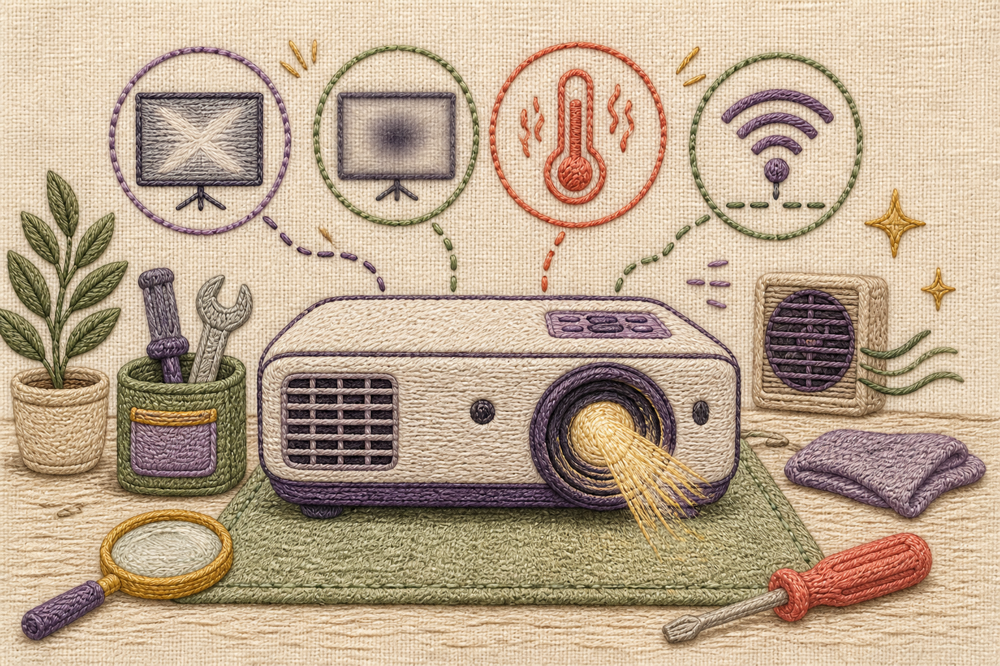

Projetor sem espetáculo?
Escolha o sintoma e teste uma etapa por vez.

Selecione um sintoma
Fontes em português do Brasil
Perguntas frequentes do suporte da Epson Brasil, consultadas em 25/07/2026:
- Quando não aparece imagem: conferir a conexão com a fonte de vídeo, desligar projetor e fonte e ligar novamente, usar o botão Source Search e aguardar alguns segundos e, em HDMI, testar um cabo mais curto.
- Temperatura e indicadores luminosos: lâmpada apagando com o indicador de status piscando e o de temperatura aceso significa que o projetor superaqueceu e se desligou.
- Quando o projetor não liga: aguardar o indicador parar de piscar e ficar laranja antes de pressionar o botão de energia de novo; a fonte conectada também pode estar em suspensão ou com tela preta.
Trocamos as páginas anteriores porque eram da Epson dos Estados Unidos e da BenQ em inglês. A documentação da Epson em /PT/ também foi descartada: é português europeu (“controlo”, “premir”, “arrefecimento”), e a regra da Fábrica exige português do Brasil. Os passos aqui são conservadores e valem para projetores em geral, mas indicadores, menus e procedimento de resfriamento variam por modelo — o manual do seu é a referência final.